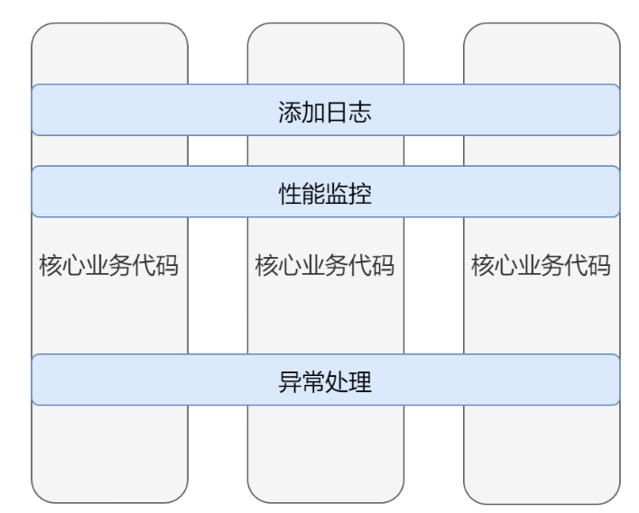
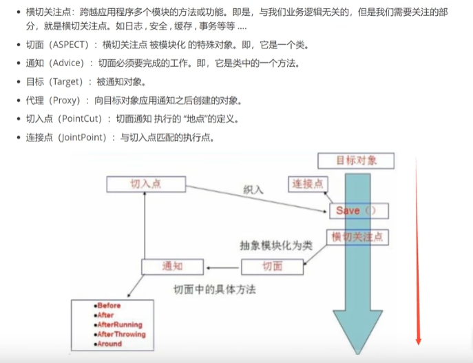

Spring 官方文档地址 :https://docs.spring.io/spring-framework/reference/core/beans/introduction.html
B站评论区中文：https://www.docs4dev.com/docs/zh/spring-framework/4.3.21.RELEASE/reference/beans.html#beans-factory-scopes
1. IOC 容器 Bean的实例化 1.1 使用静态工厂方法实例化
1 2 3 <bean id ="clientService" class ="examples.ClientService" factory-method ="createInstance" />
1.2 使用实例工厂方法实例化，使用 factory-bean 和 factory-method 去配置
1 2 3 4 5 6 7 8 9 <bean id ="serviceLocator" class ="examples.DefaultServiceLocator" > </bean > <bean id ="clientService" factory-bean ="serviceLocator" factory-method ="createClientServiceInstance" />
1 2 3 4 5 6 7 8 public class DefaultServiceLocator {private static ClientService clientService = new ClientServiceImpl ();public ClientService createClientServiceInstance () {return clientService;
1.3 内部类
如果您在com.example包中有一个名为SomeThing的类，并且此SomeThing类具有一个名为OtherThing的static嵌套类，则 Bean 定义上class属性的值为com.example.SomeThing$OtherThing。 请注意，名称中使用了$字符以将嵌套的类名与外部类名分开
2. 依赖注入 )IoC 也称为依赖项注入(DI)。在此过程中，对象仅通过构造函数参数，工厂方法的参数或在构造或从工厂方法返回后在对象实例上设置的属性来定义其依赖项(即，与它们一起使用的其他对象) 。然后，容器在创建 bean 时注入那些依赖项。此过程从根本上讲是通过使用类的直接构造或诸如服务定位器模式之类的控件来控制其依赖项的实例化或位置的 bean 本身的逆过程(因此称为 Control Inversion)。
2.1 构造函数注入
1 2 3 4 5 6 7 8 9 10 <beans > <bean id ="beanOne" class ="x.y.ThingOne" > <constructor-arg ref ="beanTwo" /> <constructor-arg ref ="beanThree" /> </bean > <bean id ="beanTwo" class ="x.y.ThingTwo" /> <bean id ="beanThree" class ="x.y.ThingThree" /> </beans >
2.2 基于 Setter 的依赖注入
1 2 3 4 5 6 7 8 9 10 11 12 13 <bean id ="exampleBean" class ="examples.ExampleBean" > <property name ="beanOne" > <ref bean ="anotherExampleBean" /> </property > <property name ="beanTwo" ref ="yetAnotherBean" /> <property name ="integerProperty" value ="1" /> </bean > <bean id ="anotherExampleBean" class ="examples.AnotherBean" /> <bean id ="yetAnotherBean" class ="examples.YetAnotherBean" />
2.3基于工厂方法
1 2 3 4 5 6 7 8 <bean id ="exampleBean" class ="examples.ExampleBean" factory-method ="createInstance" > <constructor-arg ref ="anotherExampleBean" /> <constructor-arg ref ="yetAnotherBean" /> <constructor-arg value ="1" /> </bean > <bean id ="anotherExampleBean" class ="examples.AnotherBean" /> <bean id ="yetAnotherBean" class ="examples.YetAnotherBean" />
2.4 一种简化配置的模式 p命名空间和c命名空间 P是属性C 是构造函数
1 2 3 4 5 6 7 8 9 10 11 12 13 14 <beans xmlns ="http://www.springframework.org/schema/beans" xmlns:xsi ="http://www.w3.org/2001/XMLSchema-instance" xmlns:p ="http://www.springframework.org/schema/p" xsi:schemaLocation ="http://www.springframework.org/schema/beans https://www.springframework.org/schema/beans/spring-beans.xsd" ><bean id ="myDataSource" class ="org.apache.commons.dbcp.BasicDataSource" destroy-method ="close" p:driverClassName ="com.mysql.jdbc.Driver" p:url ="jdbc:mysql://localhost:3306/mydb" p:username ="root" p:password ="misterkaoli" /> </beans >
2.5 通过XML 更简洁
1 2 3 4 5 6 7 8 9 10 11 <bean id ="mappings" class ="org.springframework.context.support.PropertySourcesPlaceholderConfigurer" > <property name ="properties" > <value > </value > </property > </bean >
2.6 支持用户创建bean对象
除了包含有关如何创建特定 bean 的信息的 bean 定义之外，ApplicationContext实现还允许注册在容器外部(由用户)创建的现有对象。这是通过getBeanFactory()方法访问 ApplicationContext 的 BeanFactory 来完成的，该方法返回 BeanFactory DefaultListableBeanFactory的实现。 DefaultListableBeanFactory通过registerSingleton(..)和registerBeanDefinition(..)方法支持此注册。但是，典型的应用程序只能与通过常规 bean 定义元数据定义的 bean 一起使用。
2.7 如果全部采用构造函数注入，则可能会导致循环依赖
三级缓存 【涉及到bean的生命周期 需要详细了解 】
2.8 延迟加载 ，首次调用的适合加载 而不是容器初始化 的时候就创建了
1 2 <bean id ="lazy" class ="com.something.ExpensiveToCreateBean" lazy-init ="true" /> <bean name ="not.lazy" class ="com.something.AnotherBean" />
3.自动装配 3.1 .自动装配模式
Mode
Explanation
no(默认)无自动装配。
byName按名称注入 自动查找set方法值相同 beanId 比如setBean() 则需要有个bean对象的Id为bean
byType按类型，必须包装容器里面类型只有一个，如果有多个 结合@Qualifier(value={beanid})
constructor类似于byType，但适用于构造函数参数
@autowired 注解需要开启注解 <context: annotion-config />
可以在属性上使用也可以在set上使用
@resource 先通过名字查找再通过类似查找
4.注解开发 @Component ：注册为bean mvc
衍生的 ： @Service @Controller @Repository
@Scope() 作用域
5.JavaConfig Spring4 以后 核心功能 @Configuration 表示该类的主要目的是作为 Bean 定义的来源
@Bean 方法来定义 Bean 间的依赖关系
以下等价方式
1 2 3 4 5 6 7 8 @Configuration public class AppConfig {@Bean public MyService myService () {return new MyServiceImpl ();
1 2 3 <beans > <bean id ="myService" class ="com.acme.services.MyServiceImpl" /> </beans >
@Configuration 注解实际也是个@component ，只不过是个特殊的配置类。类似beans.xml
@Import 多个配置类合并成一个
代理与AOP 代理静态代理和动态代理，动态代理实现方案有基于接口的JDK动态代理，基于类的cglib，基于字节码的javasist Jboss服务器
代理最大好处就是解耦，抽离业务，比如 房东只负责出租房子，至于签合同 找人 等都可以找中介代理类处理
基于接口的JDK动态代理 ：
java.lang.reflect Interface InvocationHandler
2.Proxy
AOP 动态代理模式 AOP:在程序运行期间，不修改源码对已有方法进行增强。
1 2 3 4 5 6 7 8 9 10 11 12 13 14 15 16 17 18 19 20 21 22 23 24 25 26 27 28 29 30 31 32 33 34 35 36 37 38 39 40 41 42 43 44 45 46 47 48 49 50 51 52 package com.demo.demoproxy;public class Fangdong implements Rent {@Override public void runRent () {"房东租出房子" );package com.demo.demoproxy;import java.lang.reflect.InvocationHandler;import java.lang.reflect.Method;import java.lang.reflect.Proxy;public class ProxyInvocationHandler implements InvocationHandler {public void setRent (Rent rent) {this .rent = rent;public Object getProxyRent () {return Proxy.newProxyInstance(ProxyInvocationHandler.class.getClassLoader(),rent.getClass().getInterfaces(),this );@Override public Object invoke (Object proxy, Method method, Object[] args) throws Throwable {return result;import com.demo.demoproxy.Fangdong;import com.demo.demoproxy.ProxyInvocationHandler;import com.demo.demoproxy.Rent;public class Test {public static void main (String[] args) {Fangdong fangdong = new Fangdong ();ProxyInvocationHandler pih = new ProxyInvocationHandler ();Rent proxyrent = (Rent) pih.getProxyRent();

